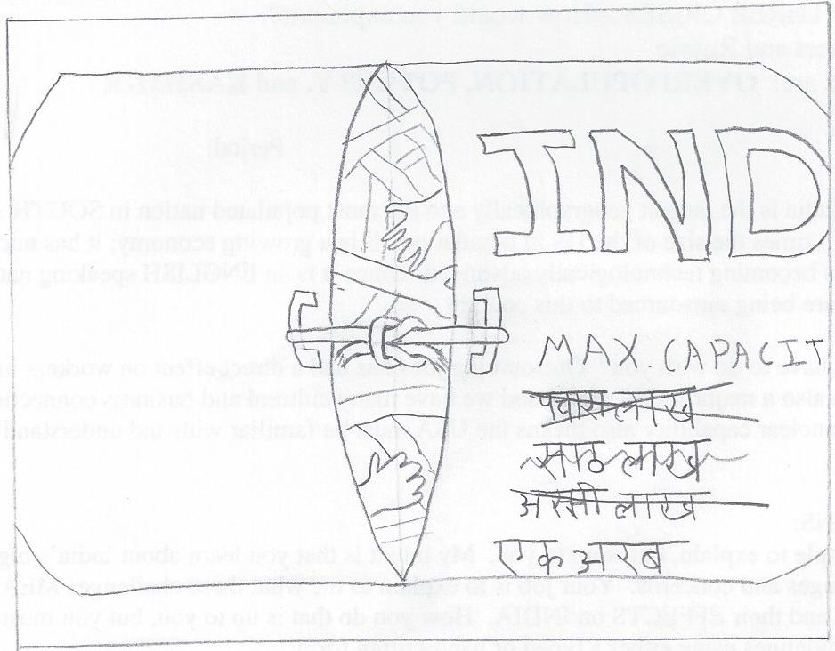

- 3: Definition
- Overpopulation is more people living in an area than that are can support. This can be in rich or poor areas. The landscape of the surrounding reigon also doesn't matter. (Overpopulation 2)
- 4: Illustration
 This illustation is a political cartoon of the "doors" to India, with the labeled maximum capacity being increased. (tranlation: 500 million -> 600 million -> 800 million -> 1 billion) The doors are about to burst from all the people inside. - 5: 3 causes
-
- Better medicine means less people die. (My Overpopulation)
- Food can be transported to more remote locations. (Overpopulation 2)
- Modern plumbing and sewage allows more people to live closer together. (Overpopulation 2)
- 6: 3 effects
-
- India needs more food than it can produce. (Overpopulation 1)
- Unemployment spikes. (My Overpopulation)
- Education is harder to obtain (Overpopulation 1)
- 7: On its own page